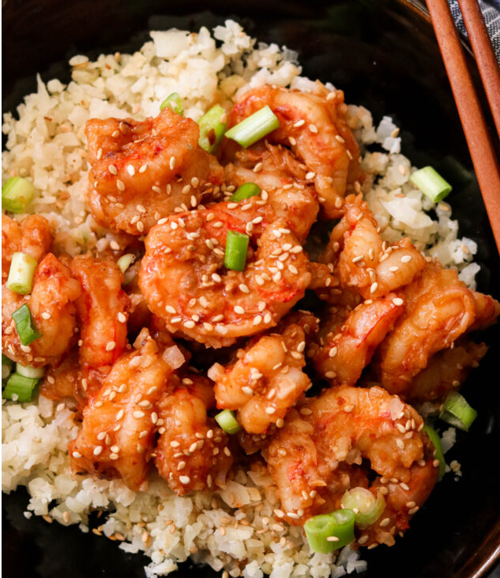

Chili Garlic Shrimp

Description
This is a wonderfully spicy asian inspired chili garlic shrimp. It is simple to make and Whole30.
I definitely like the heat, but I tend to tone it back for the family so they can enjoy it without
burning their mouths. Having a good blender definitely helps, but it isn't necessary. Having a
blender is, but it doesn't have to be a Vitamix.
This is also not my recipe, I got this over from this awesome site.
Ingredients
Main Dish
- 1 lb shrimp peeled and deveined
- 1 tbsp avocado oil or your favorite cooking oil
- 1 tsp sesame oil
- 4 garlic cloves minced
- 1 inch ginger grated
- 1 tsp chili flakes
- Green onions & sesame seeds for garnish
Sauce
- 1/2 cup water
- 1 Medjool date, pitted
- 2 TBsp Sriracha
- 3 TBsp Coconut Aminos
Steps
- Make the sauce first by blending all the ingredients together until smooth. Set aside.
- Heat avocado oil in a large skillet over medium high heat.
- Pat dry the shrimp, then add to the heated skillet in a single layer. Pan fry for 1 minute per side, then remove from the skillet. Set aside.
- Add sesame oil to the same skillet, then add garlic, ginger, and chili flakes. Stir for 1 minute until fragrant.
- Pour in the sauce, then simmer for 3-4 minutes until slightly thickened.
- Add the shrimp back into the skillet. Toss to coat in the sauce, then cook for 1-2 minutes until heated through. Serve warm.
Home